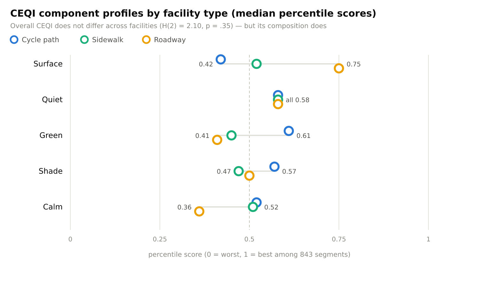
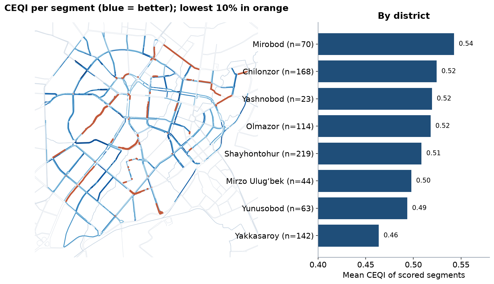

LEC16 · Urban Transport Systems Planning and Design · TSTU · Prof. J. Sodikov
1 / 22
What you will be able to do after today
Apply the five requirements for cycling infrastructure
Choose a facility type from traffic speed and composition
Design continuity through junctions and past bus stops
Use Tashkent's measured comfort data to target upgrades
2 / 22
This lecture moves from the cycle network to the design of each facility. You will apply five requirements for cycling infrastructure and choose a facility type from the speed and make-up of motor traffic. You will design continuous routes through junctions and past bus stops. Finally, you will use comfort data measured in Tashkent to decide where upgrades are needed.
Where this sits
A published 2006 course on urban transportation planning treated bicycle and pedestrian planning and traffic calming as core urban transport
Network design (Week 4): cycling as its own network layer
Dutch design guidance (CROW) supplies the requirements; GDCI the global street practice
Today: from network (Week 4) to the facility and the junction
3 / 22
An archived 2006 course on urban transportation planning treated bicycle and pedestrian planning and traffic calming as core urban transport. The network-design perspective, as Week 4 showed, treats cycling as its own network layer. Dutch guidance from CROW supplies the requirements, and GDCI supplies global street practice. Today's lecture moves from the network to the single facility and the junction.
Five requirements for cycling infrastructure
Coherence: the network connects all origins and destinations
Directness: few detours and little delay
Safety: conflicts with motor traffic and between users minimised
Attractiveness: pleasant, legible, socially safe — in Tashkent also shaded
4 / 22
CROW sets five requirements for cycling infrastructure. Coherence means the network connects all origins and destinations, and directness means few detours and little delay. Safety means few conflicts with motor traffic and between users. Comfort means smooth surfaces, gentle slopes and low stress, and attractiveness means pleasant, easy-to-read routes that feel socially safe, which in Tashkent also means shaded.
Level of Traffic Stress: the weakest link
LTS 1: tolerable for children; LTS 4: only for the 'strong and fearless'
LTS 2 is the most stress the mainstream adult will accept
A route is only as tolerable as its most stressful link
So the useful network is the low-stress sub-network — check its connectivity
5 / 22
Level of Traffic Stress (LTS) rates how stressful a link feels to ride, from LTS 1, which children can tolerate, to LTS 4, for the "strong and fearless". LTS 2 is the most stress that the mainstream adult will accept. A route is only as tolerable as its most stressful link. So the useful network is the low-stress part, and you must check that this part is connected.
Choosing a facility from speed and traffic
Motor traffic
Typical choice
Notes
Low speed (about 30 km/h), low volume
Mixed traffic, cycle street
Calm the street first
Medium speed (about 50 km/h) or busy
Cycle lane or one-way track
Buffer from parked-car doors
High speed (60 km/h and above) or 3+ lanes
Protected track, physically separated
Most Tashkent arterials
Heavy bus and truck traffic
Protected track, island stops
Avoid bus–bike weaving
6 / 22
The table links the type of cycle facility to the motor traffic beside it. On low-speed, quiet streets of about 30 km/h, cyclists can share the road, but first calm the street. At about 50 km/h, or on busy streets, a cycle lane or one-way track with a buffer from car doors fits. At 60 km/h and above, or on 3+ lanes, and with heavy bus and truck traffic, cyclists need a protected track, with island stops where buses run. These thresholds are illustrative.
Continuity at junctions
Most cycle crashes in cities happen at junctions, not on links
Signals: separate or early green for cyclists where turning traffic is heavy
A track that stops before the junction fails the coherence test
7 / 22
Most cycle crashes in cities happen at junctions, not on the links between them. A protected junction uses corner islands, a set-back crossing and clear sightlines. Where many vehicles turn, signals can give cyclists a separate or an early green. A cycle track that stops before the junction fails the coherence test.
Conflicts at stops and on shared sidewalks
Bus stops are where cyclists, boarding passengers and buses meet
Island stops route the track behind the boarding area (Week 7 layout)
Shared sidewalks move the conflict to pedestrians — older people feel it most
Where space is short: narrow the carriageway before the footway
8 / 22
Bus stops are where cyclists, boarding passengers and buses meet. An island stop, as in the Week 7 layout, routes the cycle track behind the boarding area. A shared sidewalk does not remove the conflict: it moves it to pedestrians, and older people feel it most. Where space is short, narrow the carriageway before you narrow the footway.
Cycle parking and micromobility
Secure, visible parking at stations, schools, universities and shops
E-bikes and e-scooters raise speed differences on shared paths
Shared fleets need parking zones so footways stay clear
Tashkent's Qwatt e-bike share: more than 1,300 bikes near metro stations and universities
9 / 22
Cyclists need secure, visible parking at stations, schools, universities and shops. Micromobility means small light vehicles such as e-bikes and e-scooters, which widen speed differences on shared paths. Shared fleets need parking zones so that footways stay clear. Tashkent's Qwatt e-bike share has more than 1,300 bikes near metro stations and universities.
Tashkent: what riding actually feels like
Normukhammadov (2026), PhD research at TSTU: panoramic camera and sensor audit of the ridden network
10 / 22
The second part of the lecture shows what riding in Tashkent actually feels like. It uses Normukhammadov's (2026) PhD research at TSTU, which audited the ridden network with a panoramic camera and sensors. Each second, the equipment logged vibration, noise, light, greenery and steering movements.
Mean speed 11.5 vs 10.5 km/h on cycle paths vs sidewalks
Sidewalk riding is the norm — the pedestrian conflict is built in
11 / 22
Normukhammadov audited 1,021.4 km of streets: 23.4% is cycle path, 64.8% sidewalk and 11.7% roadway. 66.4% of the recorded riding time was on sidewalks. Mean speed was 11.5 km/h on cycle paths and 10.5 km/h on sidewalks. Riding on sidewalks is normal in Tashkent, so a conflict with pedestrians is built into the network.
Comfort has several dimensions

Normukhammadov (2026) Fig. 3-4: Cycling Environment Quality Index (CEQI) component profiles by facility (843 scored segments).
12 / 22
The CEQI, or Cycling Environment Quality Index, is Normukhammadov's comfort index, scored from 0 to 1 and built from five components. The figure compares the component profiles of cycle paths, sidewalks and roadway across 843 segments. Cycle paths score well on greenery and shade but badly on surface. The roadway is smooth but stressful.
Protected but rough, smooth but exposed
Median vibration at typical riding speed: 6.90 / 6.02 / 1.60 m/s² (path / sidewalk / roadway)
Cycle-path surface component 0.42 — the lowest of any facility
Overall CEQI medians 0.52 / 0.51 / 0.52: no facility type wins
Upgrade priority on existing paths: resurfacing, not more kilometres
13 / 22
Median vibration at typical riding speed is 6.90 / 6.02 / 1.60 m/s² on cycle paths, sidewalks and roadway, so the roadway is about four times smoother. The cycle-path surface component, 0.42, is the lowest of any facility. Overall CEQI medians are 0.52 / 0.51 / 0.52, so no facility type comes out best. On existing paths, the priority is resurfacing, not more kilometres, and Week 9 returns to this as asset management.
Lowest-quality links by district

Computed in LAB8 from the thesis CEQI table: segments in the lowest decile (orange) and district means.
14 / 22
The map colours each scored segment by its CEQI, with darker blue meaning better and the lowest tenth in orange. A bar chart beside it gives the mean CEQI of each district. LAB8 computed both from the thesis table of segment scores. Scored segments lie in eight districts, because the survey covered the centre of the city.
Reading the CEQI map
District means range from 0.46 (Yakkasaroy) to 0.54 (Mirobod)
85 segments at or below 0.319 form the lowest decile
Good and bad links interleave in every district — target links, not districts
Check each low link's weakest component: surface, noise, greenery, shade or calm
15 / 22
District means range from 0.46 (Yakkasaroy) to 0.54 (Mirobod), a small spread. The lowest decile, the worst tenth of segments, contains 85 segments at or below 0.319. Good and bad links sit side by side in every district, so target links, not districts. For each low link, find its weakest component: surface, noise, greenery, shade or calm.
Conflicts at bus stops in Tashkent
Ridden sidewalks within 30 m of a bus stop: 74.8 km; 1,154 of 2,019 bus stops lie next to them
Every one is a potential cyclist–passenger conflict
Gap closure converts sidewalks to cycle tracks — stops need island layouts at the same time
Audit stops first when you upgrade a sidewalk route
16 / 22
In Tashkent, 74.8 km of ridden sidewalk lies within 30 m of a bus stop, and 1,154 of 2,019 bus stops lie next to such sidewalks. At each of these stops, cyclists and passengers may come into conflict. Closing cycle-network gaps converts sidewalks to cycle tracks, so stops need island layouts at the same time. When you upgrade a sidewalk route, audit its stops first.
From fragments to a network
149 fragments of cycle path; the largest is 31.1 km
Bo'rijar canal route: a TSTU proposal for a continuous canal-side corridor
Simulated survey and TOPSIS ranking of network options in Tashkent
Network continuity (Week 4) and link quality (today) must be planned together
17 / 22
Normukhammadov's thesis counts 149 fragments of cycle path, and the largest is 31.1 km long. TSTU studies propose a continuous route along the Bo'rijar canal and rank network options with TOPSIS, using a simulated survey that Week 14 examines. Network continuity, from Week 4, and link quality, from today, must be planned together.
Method: auditing with georeferenced images
Ride or walk the route with a camera and GPS; photos carry time and position
QGIS imports geotagged photos as points; code each barrier and its severity
Code by user group: who is blocked — a wheelchair user, a child, a cyclist?
Safety first: observe from safe positions; no faces or plates in shared images
18 / 22
A georeferenced image is a photo that stores the time and position where it was taken. Ride or walk the route with a camera and GPS, then import the photos into QGIS as points and code each barrier and its severity. Code each barrier by the user group it blocks, such as a wheelchair user, a child or a cyclist. Work from safe positions, and keep faces and number plates out of shared images.
Discussion
Your corridor has a rough cycle path and a smooth, busy roadway. Do you resurface the path, protect a lane on the road, or both — and in what order?
Argue from the five requirements and from who rides today.
19 / 22
Your corridor has a rough cycle path and a smooth but busy roadway. Decide whether you would resurface the path, protect a lane on the road, or both, and in which order. Support your answer with the five requirements and with evidence on who rides there today.
Key takeaways
Choose the facility from speed and traffic, then design the junctions
A route is only as good as its most stressful link
Stops and shared sidewalks are where cycling meets walking — design them together
Tashkent's cycle paths need resurfacing and continuity more than new kilometres
20 / 22
Choose the facility from the speed and the traffic, and then design the junctions. A route is only as good as its most stressful link. Stops and shared sidewalks are where cycling meets walking, so design them together. Tashkent's cycle paths need resurfacing and continuity more than new kilometres.
References
CROW (2016). Design Manual for Bicycle Traffic. Ede: CROW. https://www.crow.nl
Salvucci, F., Antos, J., & Murga, M. (2006). 11.540J/1.252J/ESD.225J Urban Transportation Planning, Fall 2006. Massachusetts Institute of Technology: MIT OpenCourseWare (archived in DSpace@MIT). License: CC BY-NC-SA. https://dspace.mit.edu/handle/1721.1/107706
TU Delft, Department of Transport & Planning. CIEM6250 Transport Systems Design — units B-1 Network Design, B-2 Service Design, B-3 Physical Infrastructure Management, B-4 Traffic Operations Management (Smart Public Transport Lab education page; MSc Civil Engineering TTE track). https://www.tudelft.nl/citg/over-faculteit/afdelingen/transport-planning/research/labs/smart-public-transport-lab/education
Global Designing Cities Initiative & NACTO (2016). Global Street Design Guide. Island Press. https://globaldesigningcities.org/publication/global-street-design-guide/
Normukhammadov, A. (2026). Pedalling Towards Sustainability: Developing an Integrated Bicycle Network for Enhanced Urban Mobility in Tashkent City (PhD thesis draft; supervisor J. I. Sodikov). Tashkent State Transport University.
Mekuria, M. C., Furth, P. G., & Nixon, H. (2012). Low-Stress Bicycling and Network Connectivity (MTI Report 11-19). San José, CA: Mineta Transportation Institute. https://transweb.sjsu.edu/research/Low-Stress-Bicycling-and-Network-Connectivity
GIZ. Sustainable Urban Transport Project (SUTP) Sourcebook modules (e.g. 1g Urban Freight; 2a Land Use Planning; 3d Non-Motorised Transport; 5e Transport and Climate Change). Eschborn: GIZ. https://www.sutp.org
NACTO (2013). Urban Street Design Guide. Island Press. https://nacto.org/publication/urban-street-design-guide/
Pulatova, Z. S. (2024). Walkability assessment of Tashkent city districts (PhD dissertation, in Uzbek; supervisor J. I. Sodikov). Tashkent State Transport University.
Sodikov, J. I., et al. (2024). Cycling the Bo'rijar route: infrastructure innovation for Tashkent's sustainable transit. Inzhener. https://engineer.tstu.uz
Sodikov, J. I., et al. (2026). Improving urban bicycle network planning: evidence from a survey and TOPSIS analysis in Tashkent. Inzhener. https://engineer.tstu.uz